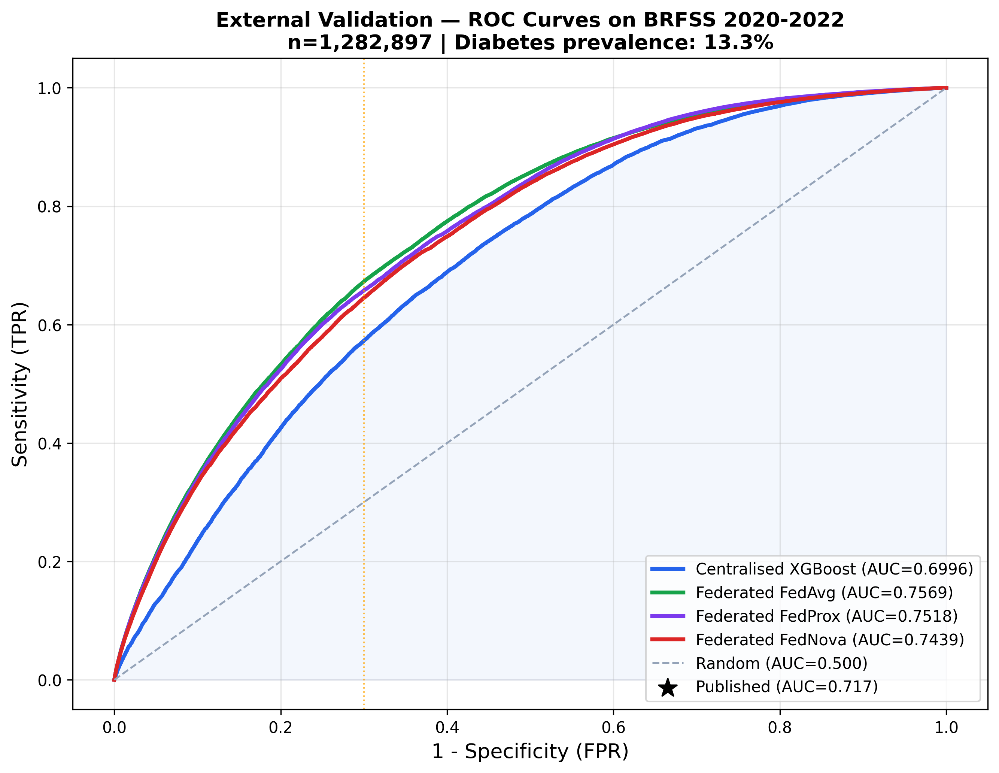
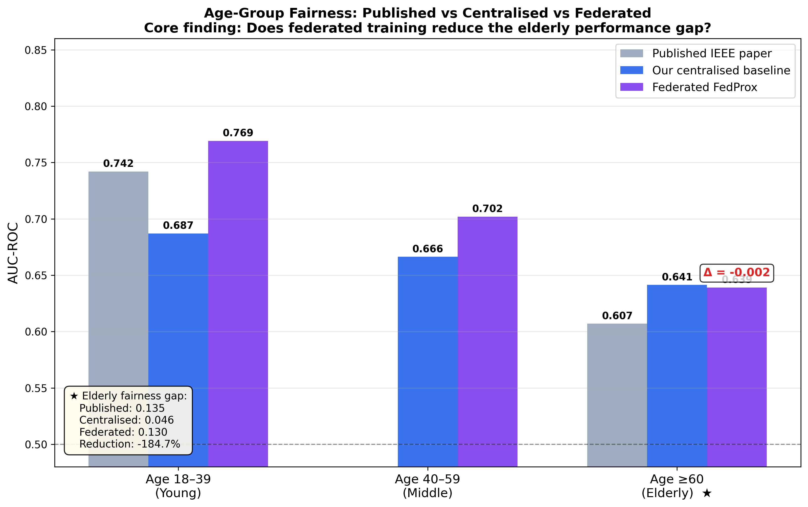
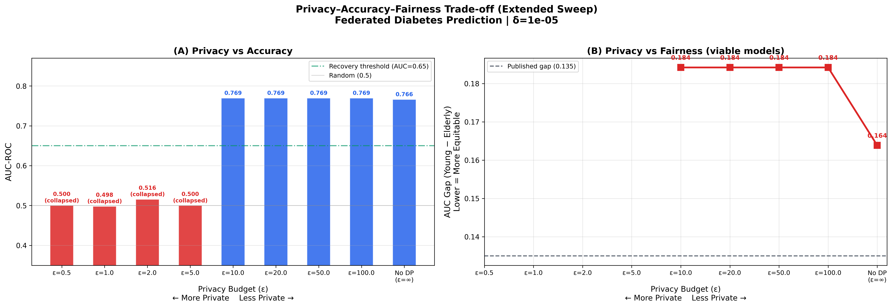

Privacy-preserving federated learning for diabetes risk prediction, externally validated on 1.28 million BRFSS patients.
Wider generalization gap between training and real-world performance.
40% narrower gap — without any site ever sharing a patient record.
Generalization gap, centralized vs. federated
Hospitals cannot share patient records, so how do they train one model together? Federated learning sends the model to the data instead of the data to a server. This paper checks what federated papers usually don't: whether the jointly trained model still works on a different population of 1.28 million people, whether it treats the elderly fairly, whether its probabilities are honest, and whether formal privacy protection actually holds. Three of the four go surprisingly well — the federated model beats the centralized one externally. The fourth is an honest negative: differential privacy destroys the model at realistic settings, and the paper says so plainly.
Clinical risk models trained centrally tend to fail on out-of-domain patients, and privacy constraints often prevent pooling raw records across institutions in the first place. The goal: a diabetes risk model trained without sharing data that still holds up on a population it never saw — audited on generalisation, fairness, calibration, and privacy simultaneously.
Demographically partitioned NHANES client nodes train locally; four aggregation strategies — FedAvg, FedProx, FedNova, SCAFFOLD — are compared over 50 rounds under non-IID participation, with a DP-SGD privacy sweep (Opacus) tracing the utility–privacy frontier and isotonic calibration repairing probability estimates.
External validation on 1.28M BRFSS respondents reaches AUC 0.757 with ECE 0.001 after calibration — a generalization gap 40% narrower than centralized training, with utility recovered above ε≈10. Subgroup fairness is reported across demographic strata, and the full pipeline is reproducible end-to-end.
External AUC on 1.28M unseen records
The federated model generalises better than both centralized controls.



It moves federated-learning evaluation beyond "privacy by architecture" toward audit-first deployment evidence — including the honest negative on differential privacy at strict budgets, stated plainly rather than buried.